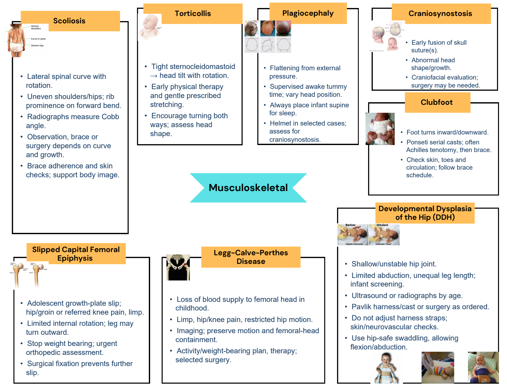
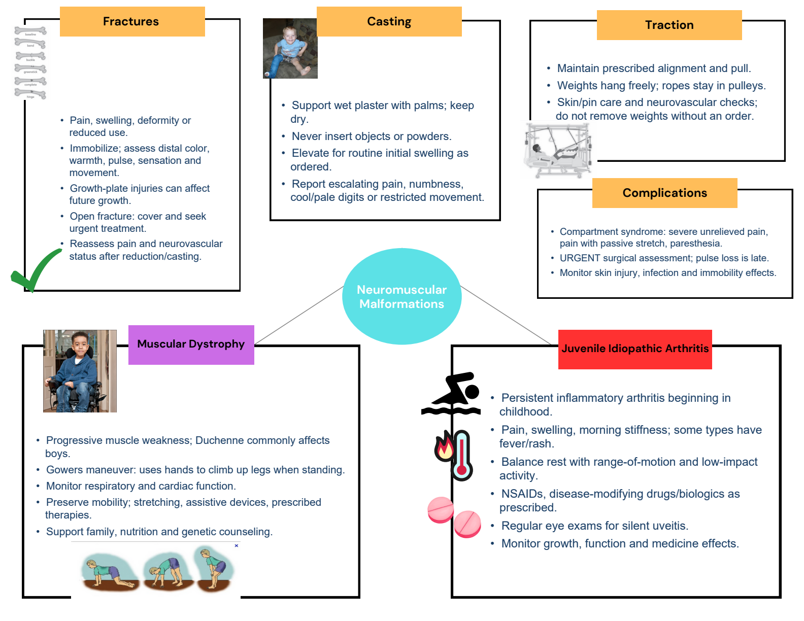

Completed maps with every original diagram. Switch to the original for blank practice.
1 / 2 Pediatric orthopedic disorders
Completed map · original artwork + added blue notes Completed study notes · suggested additions
Scoliosis Lateral spinal curve with rotation. Uneven shoulders/hips; rib prominence on forward bend. Radiographs measure Cobb angle. Observation, brace or surgery depends on curve and growth. Brace adherence and skin checks; support body image. Torticollis Tight sternocleidomastoid → head tilt with rotation. Early physical therapy and gentle prescribed stretching. Encourage turning both ways; assess head shape. Plagiocephaly Flattening from external pressure. Supervised awake tummy time; vary head position. Always place infant supine for sleep. Helmet in selected cases; assess for craniosynostosis. Craniosynostosis Early fusion of skull suture(s). Abnormal head shape/growth. Craniofacial evaluation; surgery may be needed. Clubfoot Foot turns inward/downward. Ponseti serial casts; often Achilles tenotomy, then brace. Check skin, toes and circulation; follow brace schedule. Slipped capital femoral epiphysis Adolescent growth-plate slip; hip/groin or referred knee pain, limp. Limited internal rotation; leg may turn outward. Stop weight bearing; urgent orthopedic assessment. Surgical fixation prevents further slip. Legg–Calvé–Perthes Loss of blood supply to femoral head in childhood. Limp, hip/knee pain, restricted hip motion. Imaging; preserve motion and femoral-head containment. Activity/weight-bearing plan, therapy; selected surgery. Developmental dysplasia of hip Shallow/unstable hip joint. Limited abduction, unequal leg length; infant screening. Ultrasound or radiographs by age. Pavlik harness/cast or surgery as ordered. Do not adjust harness straps; skin/neurovascular checks. Use hip-safe swaddling, allowing flexion/abduction. Original selectable text Exact extraction; text embedded inside pictures remains in the full-size original visual.
Slipped Capital Femoral
Epiphysis Legg-Calve-Perthes
Disease
Craniosynostosis
Clubfoot
Developmental Dysplasia
of the Hip (DDH)
Torticollis PlagiocephalyScoliosis
Musculoskeletal 2 / 2 Fractures, immobilization and chronic conditions
Completed map · original artwork + added blue notes Completed study notes · suggested additions
Fractures Pain, swelling, deformity or reduced use. Immobilize; assess distal color, warmth, pulse, sensation and movement. Growth-plate injuries can affect future growth. Open fracture: cover and seek urgent treatment. Reassess pain and neurovascular status after reduction/casting. Casting Support wet plaster with palms; keep dry. Never insert objects or powders. Elevate for routine initial swelling as ordered. Report escalating pain, numbness, cool/pale digits or restricted movement. Traction Maintain prescribed alignment and pull. Weights hang freely; ropes stay in pulleys. Skin/pin care and neurovascular checks; do not remove weights without an order. Complications Compartment syndrome: severe unrelieved pain, pain with passive stretch, paresthesia. URGENT surgical assessment; pulse loss is late. Monitor skin injury, infection and immobility effects. Muscular dystrophy Progressive muscle weakness; Duchenne commonly affects boys. Gowers maneuver: uses hands to climb up legs when standing. Monitor respiratory and cardiac function. Preserve mobility; stretching, assistive devices, prescribed therapies. Support family, nutrition and genetic counseling. Juvenile idiopathic arthritis Persistent inflammatory arthritis beginning in childhood. Pain, swelling, morning stiffness; some types have fever/rash. Balance rest with range-of-motion and low-impact activity. NSAIDs, disease-modifying drugs/biologics as prescribed. Regular eye exams for silent uveitis. Monitor growth, function and medicine effects. Original selectable text Exact extraction; text embedded inside pictures remains in the full-size original visual.
Neuromuscular
Malformations
Muscular Dystrophy Juvenile Idiopathic Arthritis
Traction
Fractures Casting
Complications